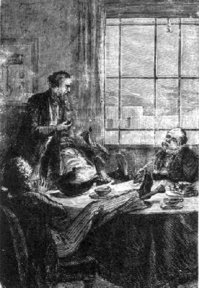
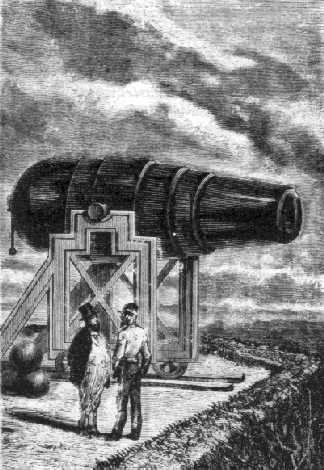
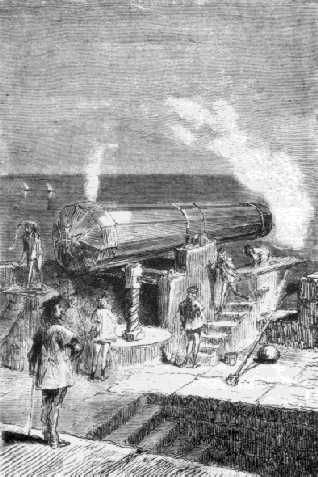

Capítol VII
L'HIMNE DEL PROJECTIL
L'observatori de Cambridge, en la seva memorable lletra del 7 d'octubre, havia tractat l'afer des del punt de vista astronòmic, però convenia a partir d'ara resoldre'l mecànicament. És aleshores quan les dificultats pràctiques haurien aparegut insuperables a tot altre país que no fos Amèrica. I ací no fou més que un joc.

El mateix president inicià la reunió
El president
Barbicane, sense perdre temps, havia nomenat en el si del Gun-Club un Comitè
executiu. Aquest Comitè havia d'escatir en tres sessions les tres importants
qüestions del canó, el projectil i la pólvora. Era compost
de quatre membres, tots ells molt entesos en aquestes matèries: Barbicane,
amb vot preponderant en cas de partició, el general Morgan, el major
Elphiston i, per últim, l'inevitable J.-T. Maston, al qual foren confiades
les funcions de secretari-cronista.
El 8 d'octubre, va reunir-se el Comitè a casa del president Barbicane,
a 3, Republican Street. Com sigui que era important que l'estómac no
vingués a malejar amb les seves punxades una tan seriosa discussió,
els quatre membres del Gun-Club prengueren lloc davant una taula coberta de
sandvitxos i de nombroses teteres. Tot seguit J.-T. Maston cargolà la
seva ploma al seu ganxo de ferro i s'obrí la sessió.
Barbicane prengué la paraula:
-Estimats col·legues- digué -, hem de resoldre un dels més
importants problemes de balística, aquesta ciència per excel·lència
que tracta del moviments dels projectils, això és, dels cossos
llençats a l'espai per una força d'impulsió qualsevol i
després abandonats a ells mateixos.
-Oh! La balística!, la balística!- exclamà J.-T. Maston
amb veu commosa.
-Potser hauria estat més lògic- reprengué Barbicane- de
dedicar aquesta primera sessió a la discussió de la màquina...
-En efecte-respongué el general Morgan.
-Això no obstant- seguí dient Barbicane-, després de madures
reflexions m'ha semblant que la primera qüestió del projectil devia
passar davant de la del canó, i que de les dimensions d'aquest dependrien
les dimensions d'aquell altre.
-Demano la paraula- exclamà J.-T. Maston.
La paraula li fou concedida tot seguit amb la consideració que mereixia
el seu passat magnífic.
-Amics meus- va dir en un to d'inspiració-, el nostre president té
raó de donar la preferència a la qüestió del projectil
per damunt de totes les altres qüestions. Aquesta bala que engegarem a
la Lluna és el nostre missatger, el nostre ambaixador, i jo us demano
permís per a considerar-la des d'un punt de vista purament moral.
Aquesta faisó nova d'examinar un projectil agullonà singularment
la curiositat dels membres del Comitè, i tots cuitaren a posar la més
gran atenció a les paraules de J.-T. Maston.
-Estimats col·legues- reprengué aquest últim-, seré
breu. Deixaré de banda la bala física, la bala que mata, per examinar
només la bala matemàtica, la bala moral. La bala és per
mi la manifestació més esclatant del poder humà; aquest
es resumeix en ella per complet i ha estat en crear-la quan l'home s'ha acostat
més al seu Creador.
-Molt bé! - digué el major Elphiston.
-En efecte- cridà l'orador-, si Déu ha fet les estrelles i els
planetes, l'home ha fet la bala, aquest criteri de velocitats terrestres, aquesta
reducció dels astres errants per l'espai, i que no són, per dir-ho
bé, res més que projectils! A Déu correspon la velocitat
de l'electricitat, la de la llum, la de les estrelles, la dels cometes, la dels
planetes, la dels satèl·lits, la del so i la del vent! Però
a nosaltres la de la bala, cent vegades superior a la velocitat dels trens i
a la dels cavalls més ràpids!
J.-T. Maston estava transportat i la seva veu adquiria accents lírics
en cantar aquest himne sagrat de la bala.
-Voleu xifres? - reprengué-. Ve-te'n aquí algunes de força
eloqüents. Tenim simplement la modesta bala de vint-i-quatre1;
quan corre, és vuit-centes mil vegades menys ràpida que la velocitat
de l'electricitat, sis-centes quaranta vegades menys ràpida que la Terra
en el seu moviment de translació al voltant del Sol i, malgrat tot, en
sortir del canó, excedeix la rapidesa del so2 car
fa dues-centes toeses per segon, dues mil toeses en deu segons, catorze milles
per minut (vora 27 quilòmetres), vuit-centes quaranta milles per hora
(uns 1.600 quilòmetres), vint mil cent milles per dia (38.396 quilòmetres),
això és, la velocitat dels punts de l'equador en el seu moviment
de rotació del globus, set milions tres-centes trenta-sis mil cinc-centes
milles per any (14.024.197 quilòmetres). Tardaria onze dies a anar a
la Lluna, dotze anys a arribar al Sol i tres-cents seixanta anys a arribar a
Neptú. Heus ací el que faria aquesta senzilla bala, sortida de
les nostres mans! ¡Què serà, doncs, quan vintuplicant aquesta
velocitat l'engegarem amb una rapidesa de set milles per segon! Ah! Magnífica
bala! Esplèndid projectil! Que em plau pensar que seràs rebut
allí dalt amb els honors deguts a un ambaixador terrestre!
Uns hurres acolliren aquesta pomposa peroració, i J.-T. Maston, tot commòs,
s'assegué bo i rebent les felicitacions dels seus confrares.
-I ara - digué Barbicane - que hem fet un capítol a part a la
poesia ataquem directament l'afer.

El Columbiad
Rodman
Estem a punt
- respongueren els membres del Comitè menjant-se cadascun mitja dotzena
de sandvitxos.
-Ja sabeu quin és el problema que es planteja - reprengué el president
-, car es tracta d'imprimir a un projectil una velocitat de dotze mil iardes
per segon. Tinc motius per a creure que reeixirem a donar-la. Però en
aquest moment, examinem les velocitats aconseguides fins ara. El general Morgan
podrà informar-nos a aquest respecte.
-I amb més motiu - va respondre el general - perquè durant la
guerra jo era membre de la comissió d'experiments. Us diré, doncs,
que els canons de cent de Dahlgreen, que disparaven fins a dues mil cinc-centes
toeses, duien el projectil a una velocitat inicial de cinc-centes iardes per
segon.
-Bé. I el Columbiad3 Rodman? - preguntà el
president.
-El Columbiad Rodman, assajat al fort Hamilton, prop de Nova-York, llençava
una bala que pesava mitja tona a una distància de sis milles, amb una
velocitat de 800 iardes per segon, resultat mai aconseguit per Armstrong i Palliser
d'Anglaterra.
-Oh, els anglesos! - féu J.-T. Maston girant vers l'horitzó de
l'est el seu temible ganxo.
-Per tant - continuà Barbicane -, ¿aquestes vuit-centes iardes
serien la màxima velocitat aconseguida fins ara?
-Sí - respongué Morgan.
-Així i tot, jo diria - replicà J.-T. Maston - que si el meu morter
no hagués rebentat...
-Sí, però va rebentar - respongué Barbicane amb un gest
benèvol -. Prenguem, doncs, per punt de partida aquesta velocitat de
800 iardes. Caldrà vintuplicar-la. A més, reservant per a una
altra sessió la discussió dels mitjans destinats a produir aquesta
velocitat, jo atrauria la vostra atenció, estimats col·legues
meus, sobre les dimensions que convé donar a la bala. Penseu bé
que ara no es tracta de projectils que pesin més de mitja tona!
-I per què no? - va preguntar el major.
-Perquè aquesta bala - respongué amb vivesa J.-T. Maston - ha
d'ésser prou grossa perquè atregui l'atenció dels habitants
de la Lluna, si és que n'hi ha.
-Sí - respongué Barbicane - i per una altra raó més
important encara.
-Què voleu dir, Barbicane? - preguntà el major.
-Vull dir que no n'hi ha prou d'enviar un projectil i ja no preocupar-se'n més.
Convé que el seguim durant el seu recorregut fins al moment en què
arribarà al seu terme.
-Ei! - feren el general i el major, quelcom sorpresos d'aquesta sortida.
-Sens dubte - insistí Barbicane com a home que està convençut
del que diu -, sens dubte, o el nostre experiment no tindrà cap resultat.
-Però llavors - replicà el major -, ¿haureu de donar a
aquest projectil unes dimensions enormes?
-No. Escolteu-me. Ja sabeu que els instruments d'òptica han adquirit
una gran perfecció; amb certs telescopis s'han arribat a aconseguir uns
augments de sis mil vegades la mida natural, i a apropar la Lluna vora quaranta
milles (uns 70 quilòmetres). Ara bé, a aquesta distància,
els objectes que tenen seixanta peus de costat són perfectament visibles.
I si no s'ha dut més enllà el poder de penetració dels
telescopis és perquè aquest poder no s'exerceix sinó en
desavantatge de llur claror, i la Lluna, que no es més que un mirall
reflectiu, no envia una llum prou intensa perquè es puguin dur els arguments
més enllà d'aquest límit.
-I bé, què farem doncs? - va preguntar el general. ¿Donareu
al vostre projectil un diàmetre de seixanta peus?
-De cap manera!
-Voldreu tornar la lluna més lluminosa?
-Perfectament.
-Aquesta sí que és bona! - exclamà J.-T. Maston.
-Sí, és cosa molt senzilla - respongué Barbicane -. En
efecte, si arribo a disminuir l'espessor de l'atmosfera que travessa la llum
de la Lluna, ¿no hauré tornat aquesta llum més intensa?
-Evidentment.
-Doncs per a aconseguir aquest resultat en tindré prou d'instal·lar
un telescopi a dalt d'una muntanya enlairada. I això és el que
farem.
-Em rendeixo, em rendeixo - respongué el major. Teniu una manera de simplificar
les coses...! ¿I fins a quin augment espereu aconseguir això?
-Un augment de quaranta-vuit mil vegades que acostaria la Lluna a cinc milles
solament4, i perquè esdevinguin visibles els objectes,
n'hi haurà prou que no tinguin més enllà de nou peus de
diàmetre.
-Precisament.
-Permeteu-me que us digui - insistí el major Elphiston - que així
i tot serà encara d'un pes tal que...
-Oh! major - respongué Barbicane -, abans de discutir-ne el pes, deixeu-me
que us digui que els nostres pares feien meravelles sota aquest aspecte. Lluny
de mi el pensament de pretendre que la balística no hagi progressat,
però és bo de saber que des de l'Edat Mitjana ja s'aconseguien
resultats sorprenents, gosaria dir més sorprenents que els nostres.
-Un exemple! - replicà Morgan.
-Justifiquen les vostres paraules - digué vivament J.-T. Maston.
-Res més senzill - respongué Barbicane -, i aquests exemples refermaran
el que vinc a dir-vos. Tenim que, durant el setge de Constantinoble per Mahomet
II, el 1543, hom llençà, uns projectils de pedra que pesaven mil
nou-centes lliures i que devien ésser d'una bella talla.
-Oh! oh! - féu el major -, mil nou-centes lliures són moltes lliures!
-A Malta, en temps dels cavallers, un cert canó del fort de Sant Elm
engegava uns projectils que pesaven dues mil cinc-centes lliures.
-No és possible!

El canó de l'illa de Malta
-Finalment,
segons un historiador francès, sota el regnat de Lluís XI, un
morter llençava una bomba de cinc-centes lliures solament, però
aquesta bomba, disparada de la Bastilla, que és un lloc on els boigs
tancaven els qui eren assenyats, anava a caure a Charenton, un indret on en
canvi els assenyats tancaven els boigs.
-Molt bé! - saltà J.-T. Maston.
-Després, què hem vist en resum? Els canons Armstrong llençaven
projectils de 500 lliures, i els Columbiads Rodman projectils de mitja tona!
En sembla, doncs, que, si els projectils han guanyat pel seu abast, en canvi
han perdut en pesantor. Ara bé, si encaminem els nostres esforços
per aquest cantó, haurem d'arribar, amb el progrés de la ciència,
a decuplicar el pes dels projectils de Mahomet II i el dels cavallers de Malta.
-Certament - respongué el major -, però ¿quin metall compteu
emprar per al projectil?
-Senzillament, el ferro fos - digué el general Morgan.
-Bah, ferro fos! - exclamà J.-T. Maston amb profund desdeny -, és
ben vulgar per a un projectil destinat a anar a la Lluna.
-No exagerem, mon honorable amic - respongué Morgan -, el ferro fos serà
suficient.
-I bé - respongué el major Elphiston -, llavors, ja que la pesantor
és proporcional al seu volum, un projectil de ferro fos que amidi nou
peus de diàmetre serà encara d'un pes espantós!
-Sí, si és ple; però no si és buit - digué
Barbicane.
-Buit! Que serà un obús?
-On podrem ficar alguna comunicació - replicà J.-T. Maston -,
i mostres de les nostres produccions terrestres.
-Sí, un obús - respongué Barbicane -, i cal absolutament
que ho sigui. Un projectil ple de 108 polzades pesaria més de dues-centes
mil lliures, un pes evidentment massa considerable; i, com que malgrat tot convé
donar una certa estabilitat al projectil, proposo que eingui un pes de cinc
mil lliures.
-Quin serà el gruix de les seves parets? - preguntà el major.
-Prenent la proporció reglamentària - reprengué Morgan
-, un diàmetre de cent vuit polzades exigeix ben bé unes parets
de dos peus.
-Encara seria excessiu - respongué Barbicane -. Fixeu-vos-hi bé,
car no es tracta aquí d'una bla destinada a perforar planxes; n'hi haurà
prou de donar-li unes parets prou fortes per a resistir la pressió dels
gasos de la pólvora. Aquí tenim, doncs, el problema: ¿quin
gruix ha de tenir un obús de ferro fos perquè no pesi més
de vint mil lliures? El nostre hàbil calculador, el brau Maston, ens
ho dirà tot seguit.
-No hi ha cosa més senzilla - replicà l'honorable secretari del
Comitè.
I dient això va escriure algunes fórmules algebraiques damunt
el paper; hom veié aparèixer sota el tremp i elevades a la segona
potència. Semblà, àdhuc, que extreia una arrel cúbica,
i finalment digué:
-Amb prou feines si les parets tindran dues polzades de gruix.
-N'hi haurà prou? - va preguntar el major amb aire dubtós.
-No - respongué el president Barbicane -, de cap manera.
-I bé!, què farem, doncs? - reprengué Elphiston amb un
aire de preocupació.
-Emprar un altre metall en lloc del ferro fos.
-El coure? - digué Morgan.
-No; encara és massa feixuc; en tinc un altre de millor que aquest per
a proposar-vos.
-Quin doncs?
-L'alumini - respongué Barbicane.
-L'alumini! - cridaren alhora els tres confrares del president.
-Sens dubte, estimats amics. Ja sabeu que un il·lustre químic
francès, Enric Sainte-Claire-Deville, va aconseguir, el 1854, obtenir
l'alumini en massa compacta. Ara bé, aquest preciós metall té
la blancor de l'argent, la inalterabilitat de l'or, la duresa del ferro, la
fusibilitat del coure i la lleugeresa del vidre. Es treballa fàcilment,
es troba escampat arreu de la naturalesa, car l'alumini forma la base de la
major part de les roques, és tres vegades més lleuger que el ferro
i sembla haver estat creat del tot expressament per proveir-nos de la primera
matèria per al nostre projectil!
-Visca l'alumini! - cridà el secretari del Comitè, sempre molt
xardorós en els seus moments d'entusiasme.
-Però, estimat president - féu el major -, el preu de l'alumini,
que potser no és extremament car?
-Ho era - respongué Barbicane -. En els primers temps de la seva descoberta,
la lliura d'alumini costava de 260 a 280 dòlars; després va baixar
a 27 dòlars, i avui, per fi, no val més enllà de nou dòlars5.
-Però nou dòlars la lliura - replicà el major que no es
rendia fàcilment - és encara un preu enorme!
-Sens dubte, estimat major, però no és inaccessible.
-Quin pes tindrà, doncs, el projectil? - preguntà Morgan.
-Heus ací què resulta dels meus càlculs - respongué
Barbicane -: una bla de cent vuit polzades de diàmetre i de dotze polzades6
de gruix, si fos de ferro fos pesaria 67.440 lliures, i en canvi, si fos d'alumini,
el seu pes restaria reduït a 19.250 lliures.
-Perfectament! - exclamà Maston -, això entra en el nostre programa.
-Molt bé, molt bé! - replicà el major -, però no
sabeu que a divuit dòlars la lliura aquest projectil valdrà...
-Cent setanta-tres mil dos-cents cinquanta dòlars. Ho sé perfectament.
Però no temeu, amics meus, que, de diner, no ens en mancarà per
a la nostra empresa. Jo us ho garanteixo.
-Plourà a les nostres caixes - resplicà J.-T. Maston.
-I bé, què me'n dieu, de l'alumini? - preguntà el president.
-Aprovat - respongueren els tres membres del Comitè.
-I, pel que es refereix a la forma de la bala - reprengué Barbicane -,
no té importància, car un cop passada l'atmosfera el projectil
es trobarà en el buit. Proposo, per tant, la bala rodona, que girarà
sobre ella mateixa si així li ve de gust i es comportarà com vulgui.
Així va acabar-se la primera sessió del Comitè. La qüestió
del projectil estava definitivament resolta, i J.-T. Maston va alegrar-se molt
de pensar que s'engegaria una bla d'alumini als selenites, "la qual cosa
els donaria un alt concepte dels habitants de la Terra!".
1. Això
és, que pesa vint-i-quatre lliures.
2. De manera que quan se sent la detonació de la
boca de foc ja se sap que no es pot ésser tocat per la bala.
3. Els americans donen el nom de Columbiad a aquestes enormes
màquines de destrucció.
4. O sia, un poc més de vuit quilòmetres.
5. Actualment, el seu cost "oficial" resulta de
60 a 63 pessetes el quilo. (N. del T.)
6. Trenta centímetres; la polzada americana val 25
mil·límetres.